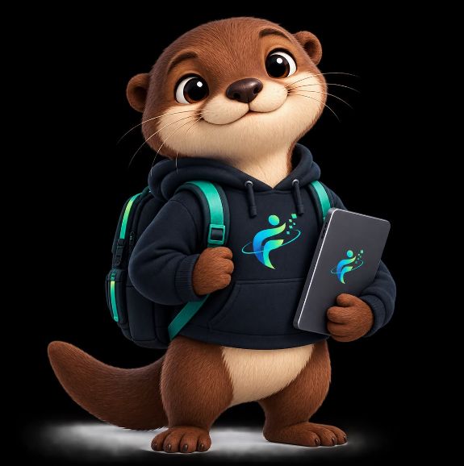

Inteligência
Aprende e se adapta sempre.
A Futuro Digital nasceu da percepção de que a tecnologia está em tudo, do currículo ao aplicativo do banco, mas nem todo mundo teve a chance de aprender a usá-la. Por isso criamos uma ONG de inclusão e educação digital, com foco em segurança na internet, acesso à tecnologia e preparação para oportunidades profissionais.
Democratizar o acesso ao conhecimento tecnológico, promovendo educação digital, segurança on-line e inclusão profissional.
Jovens em busca do primeiro emprego, adultos e pessoas com pouco acesso à formação tecnológica. Por isso, nossos conteúdos usam linguagem simples e começam do zero.
Aprende e se adapta sempre.
Aproxima pessoas e oportunidades.
Navega com cuidado e consciência.
Sempre em busca de um futuro melhor.
Respeitamos a privacidade de quem participa: pedimos só os dados necessários e seguimos os princípios da LGPD. Todas as atividades são gratuitas.

Nosso mascote é uma lontra, símbolo de inteligência, adaptabilidade e trabalho em equipe. Assim como a lontra, acreditamos em um futuro digital mais conectado, inclusivo e cheio de oportunidades para todos.
Ela acompanha você em todas as páginas: clique no botão no canto da tela para ouvir uma dica.